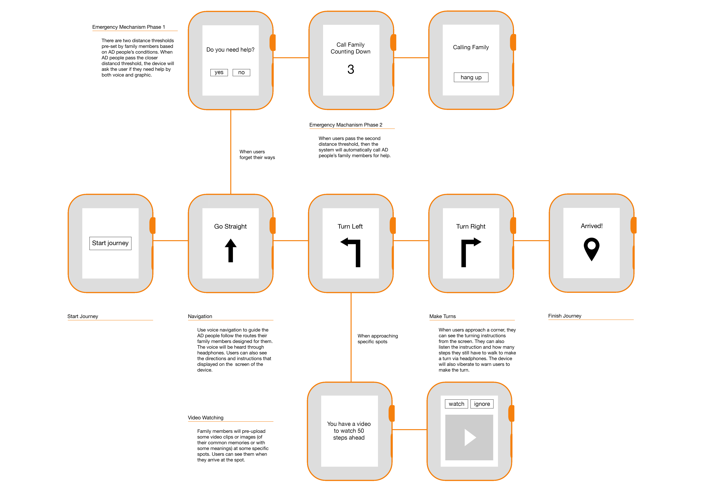
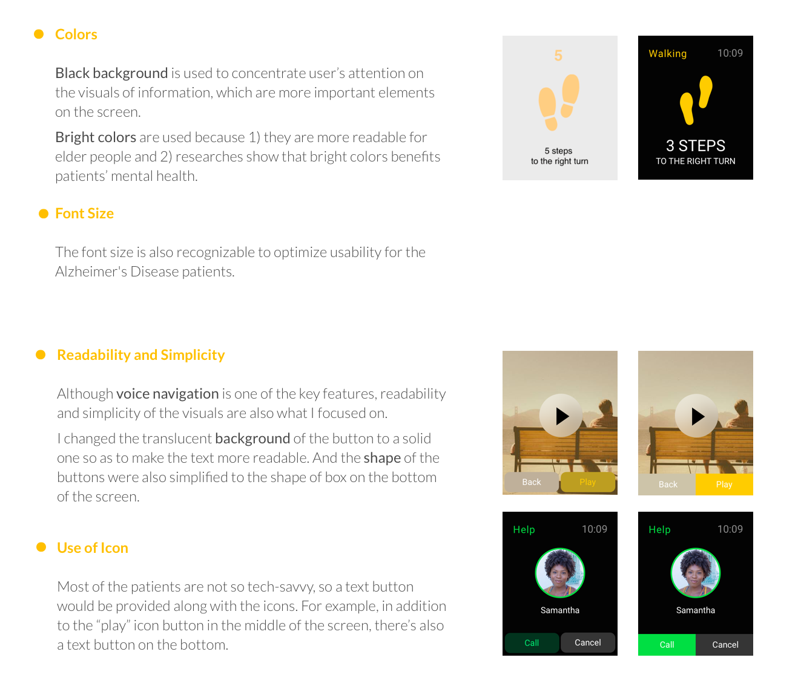

My Role & Skills Used
I played the role of UX Designer and Researcher in the team and used a user-centered design process: conducting user research, ideating based on our findings, creating several prototypes to test ideas and assumptions with end users before finally creating high-fidelity visuals for our proposed design solution.
Deliverables
Also, we submitted a 5-page research paper to elaborate the problem and our solution. The paper is archived in the ACM Digital Library.
User Research:
Focus Group, Interviews and Observations
Focus Group
10 participants
1.5 hours
Individual Interviews with Patients
5 participants
1.5 hour
Individual Interview with Family Member
1 participant
1 hour
Expert Interview
2 local experts
1 hour per expert
We conducted a focus group of 10 patients to uncover general experience.
We developed an affinity diagram to interpret the interview notes.
Findings on Users' Exercising Behaviors
Findings on Users' Device Preferences
Device Preference
Interaction
Emergency
Ideation
- Customized journeys preset by family members
- Voice navigation recorded by family members
- Emergency mechanism for patients to call for help
- Photos/Videos on specific spots as shared memories
Wireframe
Paper Prototype &
First Round of Usability Testing
We cut the paper into the shape of watches, so it could be attached to participants’ wrists just like how they wear watches in their daily lives.
Headphone was used to mimic the voice navigation and voice control system.
Design Iteration
Based on the results and feedbacks of the usability testing, we made changes to the initial design. One of the significant changes was the distancce reminder.
Some participants felt confused when they were reminded to make a turn. Thus, we decided that the device should incorporate distance reminder, both audible and visual, to remind users of the current process and the next step. And I spent a few hours exploring the solution space and trying to figure out the best way to visualize the distance reminder.
The multiple options answers the question. The criteria help determine the choice among the multiple options and articulate tradeoffs.
I didn't use any of the above design because as shown above, they have drawbacks in clear indication, or are too complex for mapping.
The final decision was a combination of the arrows and the footprints. And I applied motion design to give users a hint for walking, location, the specific number of steps left, and in the end, the direction.
Digital Prototype &
Second Round of Usability Testing
The second round of user testing was conducted for the digital prototype so we could get users feedbacks on more detailed design elements, such as colors, font size, icons, and voice instructions. The following are some updates based user feedbacks.
